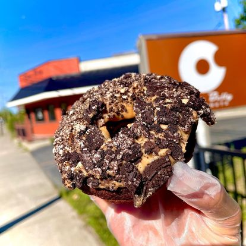

OUR MENU
The base doughnut batter contains apple cider, and the six regular flavors — plain, cinnamon-sugar, maple-glazed, chocolate-glazed, vanilla-glazed and cappuccino — are made fresh from it throughout the day; more often than not, walk-in customers receive doughnuts still warm from the fryer.

Specialty doughnuts, which have flavorings added to the base batter and thus require cleaning of the dispenser that squirts batter into the conveyor fryer, are made once, in the morning, and are gone once they've all be purchased.


